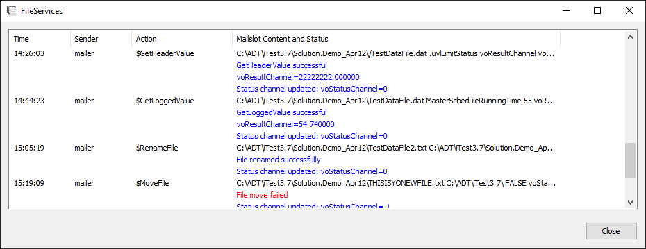
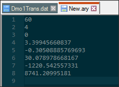

iTest User's Guide
The FileServices executable, FileServices.exe, is a standalone iTest application that provides certain file services. This executable uses traditional mailslot messages that are sent to the FileServices mailslot address. You can add this driver to your solution by adding it to the preload list.
Use the /h command switch to run FileServices in hidden mode. Alternatively, FileServices runs in hidden mode without the switch if launched using the powertek.ini preload string and DisplayPreloads=FALSE.
VCLNUM and VCLSTR, cannot be used for <ResultChan> or [StatusChan]. ) is used to escape characters.
) is used to escape characters.You can use the FileServices.exe interface to view whether the FileService command succeeded or failed. The application is accessible in the $SYSTEMDIR\Execute folder.
FileServices.exe Interface

The Time column uses the MsgTimeStampFmt format setting and defaults to the Hour:Minute:Second (%H:%M:%S) format.
To add the date timestamp to the powertek.ini:
MsgTimeStampFmt = %m/%d/%y %I:%M:%S %p (0-12 hour plus AM, PM)
MsgTimeStampFmt = %m/%d/%y %H:%M:%S (0-23 hour)
Terminates execution of FileServices.exe.
Appends the contents of the source file, <SrcFile>, to the destination file, <DestFile>. If the destination file does not exist, FileServices creates it in the specified file path location. These files are assumed to be text files.
Syntax:
$AppendFile <SrcFile> <DestFile> [StatusChan]
Arguments:
<SrcFile>: The source file and its fully qualified file path. The contents of the source file are added to the content of the destination file.
<DestFile>: The destination file and its fully qualified file path.
[StatusChan]: Return values: 1 = busy, 0 = no error reported, -1 = error reported.
Example:
$AppendFile C:\ADT\Test\Example1.txt C:\ADT\Test\Example2.txt
Changes the header field values in a data file. If the header is not found or specified, a new header line with the field name and value is added.
Syntax:
$ChangeHeaderValue <File> <HeaderFieldName> <NewValue> [StatusChan]
Arguments:
<File>: The name of the .dat file for which to modify the header value. If only the filename is provided, the file path is determined by reading the DrHoldForReviewDir setting from the solution's powertek.ini file. If this setting is not defined, then $SUPPORTDIR\Data of the active solution is used.
<HeaderFieldName>: The name of the header field to be modified.
<NewValue>: The new value to be entered in the header field.
[StatusChan]: Return values: 1 = busy, 0 = no error reported, -1 = error reported.
Example:
$ChangeHeaderValue Dmo1TransF2_4Trans.dat UserName Operator voStatusChannel
Modifies an entry within the specified log file.
Syntax:
$ChangeLoggedValue <File> <ChanName> <Row> <NewValue> [StatusChan]
Arguments:
<File>: The name of the .dat file for which to modify the logged value. If only the filename is provided, the file path is determined by reading the DrHoldForReviewDir setting from the solution's powertek.ini file. If this setting is not defined, then $SUPPORTDIR\Data of the active solution is used. If the data file is locked by the $LockDataFile mailslot, then $ChangeLoggedValue modifies the row of data stored in memory, thereby greatly improving the performance of this mailslot. In this case, any changes made will not be written to the file until the $ReleaseDataFile mailslot is sent.
<ChanName>: The channel name in the logged file to modify.
<Row>: 1-based numeric or virtual output channel of the row number in the data section. It can also be “LAST”, or "LAST-<numeric offset>". Negative values and zeroes are handled in relation to LAST (e.g., 0 = LAST, -1 = LAST-1, etc.).
<NewValue>: The new value written to the data file. No type checking is performed when the mailslot is sent, so a numeric value in the <File> argument can be replaced with a string value.
[StatusChan]: Return values: 1 = busy, 0 = no error reported, -1 = error reported.
Example:
$ChangeLoggedValue Dmo1TransF2_3Trans.dat Variance 26 1.15 voStatusChannel
In this example, the channel, Variance, is modified on data line 26 to the value 1.15.
Changes many values within the specified log file.
Syntax:
$ChangeLoggedValueMany <File> <Channel List File> <Row> <New Value> [StatusChan]
Arguments:
<File>: The data file to change. If only the filename is provided, the file path is determined by reading the DrHoldForReviewDir setting from the powertek.ini file. If that setting is missing, then $SUPPORTDIR\Data\HoldForReview is used. If the data file is locked by the $LockDataFile mailslot, then $ChangeLoggedValueMany modifies the row of data stored in memory, thereby greatly improving the performance of this mailslot. In this case, any changes made will not be written to the file until the $ReleaseDataFile mailslot is sent.
<Channel List File>: The single column text file, with one channel listed per line, or a Log Order List (*.lol) file. A file path must be provided.
<Row>: 1-based numeric or virtual output channel of the row number in the data section. It can also be “LAST”, or "LAST-<numeric offset>". Negative values and zeroes are handled in relation to LAST (e.g., 0 = LAST, -1 = LAST-1, etc.).
<New Value>: The value to be written to the file. No type checking is performed, so a numeric value in the <File> can be replaced with a string value.
[StatusChan]: Return values: 1 = busy, 0 = no error reported, -1 = error reported, -2 = one or more channels in the <Channel List File> cannot be found in <File>. Channels present in both files are to the <NewValue>.
Limitations
Example:
+0 MESSAGE "\\.\mailslot\FileServices>>$ChangeLoggedValueMany syssnap.dat $SUPPORTDIR\Data\FSlist.lol LAST -999 Cntr1"
Checks if a display is running.
Syntax:
$CheckDisplayRunning <DisplayName> <ResultChan> [StatusChan]
Arguments:
<DisplayName>: The name of the display to determine whether or not it is running.
<ResultChan>: The channel used to hold the return value. Return values: 0 = display is not running; 1 = display is running.
[StatusChan]: Return values: 1 = busy, 0 = no error reported, -1 = error reported.
Example:
$CheckDisplayRunning SignalList voResultChannel voStatusChannel
If the specified display is running, the return value of the channel, voResultChannel, is 1; if the display is not running, the return value of the channel is 0.
Checks if a string is a valid file name. If the string is a valid file name, the channel returns the value 0. If the string is invalid, the channel returns -1.
Syntax:
$CheckFileName <FileName> <ResultChan>
Arguments:
<FileName>: The file name checked for validity. The following characters will cause an invalid file name:
,{};\/:@#$&*|?>< and space
<ResultChan>: The channel used to hold the return value. Return values: 1 = busy, 0 = file name is valid, -1 = file name is invalid.
Example:
$CheckFileName Data_04_22.txt voResultChannel
Return value:
voResultChannel = 0
Checks if a program is running. This feature does not verify scripts or batch files—only programs.
Syntax:
$CheckProgramRunning <File> <ResultChan> [StatusChan]
Arguments:
<File>: The name of the application file checked in Task Manager.
<ResultChan>: The channel used to hold the return value. Return values: 1 = running; 0 = not running.
[StatusChan]: Return values: 1 = busy, 0 = no error reported, -1 = error reported.
Example:
$CheckProgramRunning AutomationPanel.exe voResultChannel voStatusChannel
If running,
voResultChannel = 1 voStatusChannel = 0
If not running,
voResultChannel = 0 voStatusChannel = 0
Copies the contents of the source file to the contents of the destination file.
Syntax:
$CopyFile <SrcFile> <DestFile> [FailIfDestExist] [StatusChan]
Arguments:
<SrcFile>: The file copied. The file name can include the use of one or more asterisks (*) as wildcard in the filename. However, if wildcards are used, the <DestFile> must be a folder location.
<DestFile>: The contents of the source file are copied to the destination file. If a file path is not provided, the file path from the <SrcFile> argument is used. If the destination file does not exist, it is created when the mailslot is sent.
[FailIfDestExist]: True/False. This is an optional setting; by default, it is set to TRUE. If TRUE, then the mailslot will fail if the destination file exists.
[StatusChan]: Requires the [FailIfDestExist] argument to be in the mailslot message. Return values: 1 = busy, 0 = no error reported, -1 = error reported.
Limitations:
Example:
$CopyFile $SYSTEMDIR\TestDataFile.txt $SUPPORTDIR\TestDataFile2.txt TRUE voStatusChannel
Copies the folder specified as the source folder and pastes it into the destination folder.
Syntax:
$CopyFolder <SrcFolder> <DestFolder> <ResultChan> [StatusChan]
Arguments:
<SrcFolder>: Source folder.
<DestFolder>: Destination folder.
<ResultChan>: The channel used to hold the return value. Return values: 1 = folder copied; 0 = folder not copied.
[StatusChan]: Return values: 1 = busy, 0 = no error reported, -1 = error reported.
Example:
$CopyFolder $SUPPORTDIR\Folder1 $SUPPORTDIR\Folder2 voResultChannel voStatusChannel
In the example above, a copy of Folder1 becomes a sub-folder of Folder2.
Creates a new folder in the location of the file path specified.
Syntax:
$CreateFolder <Folder> <ResultChan> [StatusChan]
Arguments:
<Folder>: Folder created in the specified file path.
<ResultChan>: The channel used to hold the return value. Return values: 1 = folder created or already exists; 0 = folder not created.
[StatusChan]: Return values: 1 = busy, 0 = no error reported, -1 = error reported.
Example:
$CreateFolder $SUPPORTDIR\MyNewFolder voResultChannel voStatusChannel
In this example, a new folder named MyNewFolder is added to the current active solution.
Deletes the file specified in the mailslot message. You can also use the asterisk (*) wildcard character to delete all files of a specified type in a folder.
Syntax:
$DeleteFile <File> [StatusChan]
Arguments:
File: The name of the file (or file types) that will be deleted. You must specify the fully qualified file path.
[StatusChan]: Return values: 1 = busy, 0 = no error reported, -1 = error reported.
Examples:
Delete an individual file:
$DeleteFile $SYSTEMDIR\Data\PR-001\Dmo1Step_6Trans.dat voStatusChannel
When this command is sent, Dmo1Step_6Trans.dat is deleted from the iTest install folder (PR-001).
Delete all files of a specific file type:
$SYSTEMDIR\Data\PR-001\*.dat voStatusChannel
When this command is sent, all .dat files in the PR-001 folder are deleted.
Deletes the folder specified in the mailslot message.
Syntax:
$DeleteFolder <Folder> <ResultChan> [StatusChan]
Arguments:
<Folder>: Full folder path to delete.
<ResultChan>: The channel use to hold the return value. Return values: 1 = folder deleted or does not exist; 0 = folder not deleted.
[StatusChan]: Return values: 1 = busy, 0 = no error reported, -1 = error reported.
Example:
$DeleteFolder $SYSTEMDIR\Notes voResultChannel voStatusChannel
In the example above, the Notes folder located in the iTest system directory is deleted.
Deletes a row in a .dat file.
Syntax:
$DeleteRecord <File> <Row> [StatusChan]
Arguments:
<File>: The name of the .dat file to be modified.
<Row>: 1 - based numeric row number in the data section of the .dat file.
[StatusChan]: Return values: 1 = busy, 0 = no error reported, -1 error reported.
Example:
$DeleteRecord $SUPPORTDIR\TestDataFile.dat 1 voStatusChannel
In this example, the first row of the data section is deleted from the .dat file.
Launches a specified application.
Syntax:
$Execute <File;Silent> [StatusChan]
Arguments:
<File>: The full path of the file. If there are spaces in the file name or accompanying space-delimited arguments, double quotes must surround the entire <File;Silent> argument.
<;Silent>: Optional feature that launches the executable in hidden mode. It follows the entire <File> string, including any arguments to be sent to the launched executable.
[StatusChan]: Return values: 1 = busy, 0 = file started successfully, -1 error starting the file.
 |
NOTE: | The ;Silent flag is supported by non-GUI applications but will vary with GUI applications depending on their internal startup processes. |
Examples:
$Execute $SYSTEMDIR\Execute\EventViewer.exe;Silent voStatusChannel $Execute ~"FileDialog.exe $SUPPORTDIR;iTest.txt;vsFsvc1FlexString1;vsFsvc1FlexString2 -ontop -noext~" voStatusChannel
$ExecuteWait is similar to the $Execute mailslot command except it waits until the launched program exits. By default, this period is 120 seconds. You can modify the duration of time by defining the ExecuteWaitTimeOutSecs powertek.ini setting.
Syntax:
$ExecuteWait <File;Silent> [StatusChan]
Arguments:
<File>: The full path of the file.
<;Silent>: Optional feature that launches the executable in hidden mode. It follows the entire <File> string, including any arguments to be sent to the launched executable.
[StatusChan]: Return values: 1 = busy, 0 = no error reported, -1 = error reported, -2 = timeout occurred waiting for program to exit.
|
NOTE: | The ;Silent flag is supported by non-GUI applications but will vary with GUI applications depending on their internal startup processes. |
Example:
$ExecuteWait $SYSTEMDIR\Execute\DriverActivator.exe;Silent voStatusChannel
Extracts and displays a specified file name.
Syntax:
$ExtractFilename <PathContainingFilename> <ResultChan> [StatusChan]
Arguments:
<PathContainingFilename>: Virtual string containing full path of filename.
<ResultChan>: The virtual string channel used to hold the return value – the filename.
[StatusChan]: Return values: 1 = busy, 0 = no error reported, -1 = error reported.
Example:
$ExtractFileName $SUPPORTDIR\Picklist\SysTestType.pkl vsResultChannel voStatusChannel
Return values:
vsResultChannel = SysTestType.pkl voStatusChannel = 0
Checks if a file exists.
Syntax:
$FileExists <File> <ResultChan> [StatusChan]
Arguments:
<File>: The file path and the filename of the file to verify whether it exists.
<ResultChan>: The channel used to hold the return value. Return values: 1 = file exists; 0 = file does not exist.
[StatusChan]: Return values: 1 = busy, 0 = no error reported, -1 = error reported.
Example:
$FileExists $SUPPORTDIR\PythonScripts\pyExample1.py voResultChannel voStatusChannel
If file exists,
voResultChannel = 1 voStatusChannel = 0
If file does not exist,
voResultChannel = 0 voStatusChannel = 0
Checks if a folder exists.
Syntax:
$FolderExists <Folder> <ResultChan> [StatusChan]
Arguments:
<Folder>: The full path of the folder to verify if it exists.
<ResultChan>: The channel used to hold the return value. Return values: 1 = folder exists; 0 = folder does not exist.
[StatusChan]: Return values: 1 = busy, 0 = no error reported, -1 = error reported.
Example:
$FolderExists $SUPPORTDIR\PythonScripts voResultChannel voStatusChannel
If found,
voResultChannel = 1 voStatusChannel = 0
If not found,
voResultChannel = 0 voStatusChannel = 0
Gets and displays the amount of free space (in GB) available on the drive.
Syntax:
$GetDriveFreeSpace <Drive> <ResultChan> [StatusChan]
Arguments:
<Drive>: The drive for which to report the amount of free space. This argument must contain a trailing colon (e.g., C:).
<ResultChan>: The channel used to hold the return value. The return value represents the amount of available space in GB.
[StatusChan]: Return values: 1 = busy, 0 = no error reported, -1 = error reported.
Example:
$GetDriveFreeSpace C:\ voResultChannel voStatusChannel
Returns information for the specified file such as its size (in bytes), its creation date, and its last modified date.
Syntax:
$GetFileInfo <File> <CreationResultChan> <ModifiedResultChan> <SizeResultChan> [StatusChan]
Arguments:
<File>: The name of the file.
<CreationResultChan>: The channel used to hold the return value. This is a virtual string channel used for storing the file creation string.
<ModifiedResultChan>: The channel used to hold the return value. In this case, the channel is a virtual string channel for the file last modified string.
<SizeResultChan>: The size of the file in bytes.
[StatusChan]: Return values: 1 = busy, 0 = no error reported, -1 = error reported.
Example:
$GetFileInfo "$SYSTEMDIR\Help\Release Notes 3.7.pdf" vsCreationResultChannel vsModifiedResultChannel voSizeResultChan voStatusChannel
Return values:
vsCreationResultChannel = 04/11/2017 9:11:07 AM vsModifiedResultChannel = 04/14/2017 12:28:19 PM voSizeResultChan = 1592951 voStatusChannel = 0
Returns the file's last modified time-stamp, formatted in epoch time.
Syntax:
$GetFileTime <File> <ResultChan> [Status Channel]
Arguments:
<File>: The full path of the file.
<ResultChan>: The channel used to hold the return value, the file's time-stamp.
[StatusChan]: Return values: 1 = busy, 0 = no error reported, -1 = error reported.
Example:
$GetFileTime SYSTEMDIR\Data\PR-001\Data_04_22.txt voResultChannel voStatusChannel
Return value:
voResultChannel = 1492002878
Reads the header field and returns the value in the <ReturnChan> channel.
Syntax:
$GetHeaderValue <File> <HeaderFieldName> <ReturnChan> [StatusChan]
Arguments:
<File>: The name of the .dat file for which to return a header value. If only the filename is provided, the file path is determined by reading the DrHoldForReviewDir setting from the solution's powertek.ini file. If this setting is not defined, then $SUPPORTDIR\Data of the active solution is used.
<ReturnChan>: The channel used to hold the return value. No type checking is performed, so a virtual output channel could be written with a string value.
[StatusChan]: Return values: 1 = busy, 0 = no error reported, -1 = error reported.
Example:
$GetHeaderValue $SUPPORTDIR\TestDataFile.dat vsSysTestName voResultChannel voStatusChannel
Return value:
vsSysTestName = Dmo1TransF2
Returns a logged value for the specified channel.
Syntax:
$GetLoggedValue <File> <ChanName> <Row> <ReturnChan> [StatusChan]
Arguments:
<File>: The data file from which to obtain the logged value. If only the filename is provided, the file path is determined by reading the DrHoldForReviewDir setting from the powertek.ini file. If that setting is missing, then $SUPPORTDIR\Data\HoldForReview is used.
<ChanName>: The channel name that is read from the logged file.
<Row>: 1 - based numeric or virtual output channel of the row number in the data section. It can also be “LAST”, or "LAST-<numeric offset>". Negative values and zeroes are handled in relation to LAST (e.g., 0 = LAST, -1 = LAST-1, etc.).
<ReturnChan>: The channel used to hold the return value. In this case, the return value is the value of the channel specified in the command.
[StatusChan]: Return values: 1 = busy, 0 = no error reported, -1 = error reported.
Example:
$GetLoggedValue $SUPPORTDIR\TestDataFile.dat MasterScheduleRunningTime 55 voResultChannel voStatusChannel
Return value:
voResultChannel = 55.740000
Returns the number of data rows in a file.
Syntax:
$GetRecordNum <File> <ReturnChan> [StatusChan]
Arguments:
<File>: The data file. This argument must be a complete file path and must include the .dat file extension.
<ReturnChan>: The channel used to hold the return value. It is set with the number of data lines in the file.
[StatusChan]: Return values: 1 = busy, 0 = no error reported, -1 = error reported.
Limitations:
Data files with multiple test runs (e.g., multiple PARAMS lines) are not supported.
Example:
$GetRecordNum $DATADIR\PR-001\Dmo1TransF2_5Trans.dat voResultChannel voStatusChannel
Return values:
voResultChannel=60 voStatusChannel=0
Locks a data file and and saves its channels and last line of data to dynamic memory. Locking a data file restricts behavior of the ChangeLoggedValue and ChangeLoggedValueMany in order to improve performance. After locking the data file, ChangeLoggedValue and ChangeLoggedValueMany can be used to quickly modify the line of data stored in memory. Changes to the line are not saved to the data file until the $ReleaseDataFile mailslot message is sent, which unlocks the data file and saves the changes to the last line.
If a file path isn't specified in the mailslot message, it will read the file path from the DRHoldForReviewDir powertek.ini setting.
|
NOTE: | Only one data file can be locked at a time. |
Syntax:
$LockDataFile <FileName> [StatusChan]
Arguments:
<FileName>: The name of the file to lock.
[StatusChan]: The status channel used to store the result of the mailslot message.
Status Values:
| Value | Description |
| 1 | Busy |
| 0 | File locked successfully |
| -1 | File lock failed, i.e., file does not exist |
| -2 | File is already locked |
Example:
$LockDataFile Ramp_1Trans.dat voStatusChannel
Moves a file from one location to another location.
Syntax:
$MoveFile <SrcFile> <DestFile> [FailIfDestExist] [StatusChan]
Arguments:
<SrcFile>: The file path and the file name of the file to be moved.
<DestFile>: The new file path and the original file name of the file that is being moved. If a file path is not provided, then the file path from the <SrcFile> argument is used.
[FailIfDestExist]: True/False. This is an optional setting; by default, it is set to TRUE. If TRUE, then the mailslot will fail if the destination file exists.
[StatusChan]: Requires the [FailIfDestExist] argument to be in the mailslot. Returns value: 1 = busy, 0 = no error reported, -1 = error reported.
Example:
$MoveFile $SUPPORTDIR\TestDataFile.txt $SYSTEMDIR\TestDataFile.txt TRUE voStatusChannel
Uses file name patterns to return the newest file in a specified location.
Syntax:
$NewestFile <FileNamePattern> <ResultChan> [StatusChan]
Arguments:
<FileNamePattern>: The FileNamePattern is the path used to locate the most recent file in a specified location. The asterisk (*) wildcard is supported (e.g., $SUPPORTDIR\Schedules\*.sc2).
<ResultChan>: The channel used to hold the return value. This channel is a virtual string that stores the most recent file that matches the specified pattern.
[StatusChan]: Return values: 1 = busy, 0 = no error reported, -1 = error reported.
Example:
$NewestFile $SUPPORTDIR\MasterSchedules\*.msf vsResultChannel voStatusChannel
Returns value:
vsResultChannel = Ramp_TransF2_Loop
Performs a polynomial curve fit on two columns of data from a .dat file. The results are written to an array file.
Syntax:
$Poly <DatFile> <XChan> <YChan> <Order> <AryFile> [StatusChan]
Arguments:
<DatFile>: Source file containing the data. Located in the path specified by the DRHoldForReviewDir powertek.ini setting.
<XChan>: Name of the channel for the X column of data.
<YChan>: Name of the channel for the Y column of data.
<Order>: Requested order of fit (1 - 6). May be adjusted lower if not enough points.
<AryFile>: Array file to contain the results. Located in the VXI folder of the Support directory. The format of the file is as follows:
<points> : Number of points fitted
<order> : Order of fit
<r2> : Statistical fit value
<c0> : Coefficient 0
<c1> : Coefficient 1
<c2> : Coefficient 2
<c3> : Coefficient 3
<c4> : Coefficient 4
<c5> : Coefficient 5
<c6> : Coefficient 6
[StatusChan]: The channel used to display the results of the mailslot message.
Status Values:
| Value | Description |
| 0 | No error reported |
| 1 | Busy |
| -1 | Input file error (could not be opened, not found, or no data) |
| -2 | XChan not found in input file |
| -3 | YChan not found in input file |
| -4 | Requested order not in range (1-6) |
| -5 | Could not open output file |
| -6 | Curve fit error |
Example:
$Poly $DATADIR\PR-001\Dmo1Trans.dat voDmo1Variance voDmo1Feedback 4 $SUPPORTDIR\VXI\New.ary voStatusChannel
Contents of New.ary:
.ary File

Saves the last line of the data file, if it was changed, and releases (unlocks) the file. See $LockDataFile mailslot message.
Syntax:
$ReleaseDataFile [StatusChan]
Argument:
[StatusChan]: The status channel used to display the result of the mailslot message.
Status Values:
| Value | Description |
| 1 | Busy |
| 0 | File unlocked successfully |
| -1 | File unlock failed, i.e., file does not exist |
| -2 | No file was locked |
Example:
$ReleaseDataFile voStatusChannel
The $RenameFile command modifies the name of a specified file.
Syntax:
$RenameFile <SrcFile> <DestFile> [StatusChan]
Arguments:
<SrcFile>: The file that is to be renamed.
<DestFile>: The new name for the file. If a file path is not provided, then the file path from the <SrcFile> argument is used.
[StatusChan]: Return values: 1 = busy, 0 = no error reported, -1 = error reported.
Example:
$RenameFile $SUPPORTDIR\TestDataFile.txt $SUPPORTDIR\TestDataFile_Old.txt voStatusChannel
This command appends a time-stamped message to the bottom of the log file.
Syntax:
$WriteToLogFile <File> <Text> [StatusChan]
Arguments:
<File>: The name of the log file to which a time-stamp is appended.
<Text>: The message to be written to the log file. Double quotes must surround the entire argument if it contains any spaces. All text to the right of a semi-colon is lost.
[StatusChan]: Return values: 1 = busy, 0 = no error reported, -1 = error reported.
Example:
$WriteToLogFile $SYSTEMDIR\Help\MyTestFile.txt ~"Add this message.~" voStatusChannel
This mailslot command appends a message to the bottom of a text file.
Syntax:
$WriteToTextFile <File> <Text> [StatusChan]
Arguments:
<File>: The fully qualified file path of the text file.
<Text>: This field contains the message that is appended to the bottom of the file. Double quotes must surround the entire argument if it contains any spaces. All text to the right of a semi-colon will be lost.
[StatusChan]: Return values: 1 = busy, 0 = no error reported, -1 = error reported.
Example:
MESSAGE "\\.\mailslot\FileServices>>$WriteToTextFile C:\ADT\iTest3.7\Data\PR-001\MyTextFile.txt ~"Add this message.~""